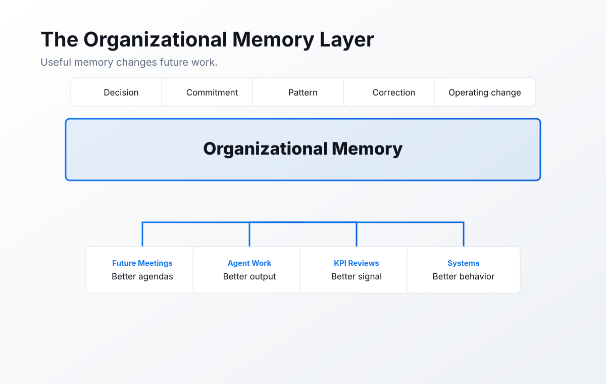
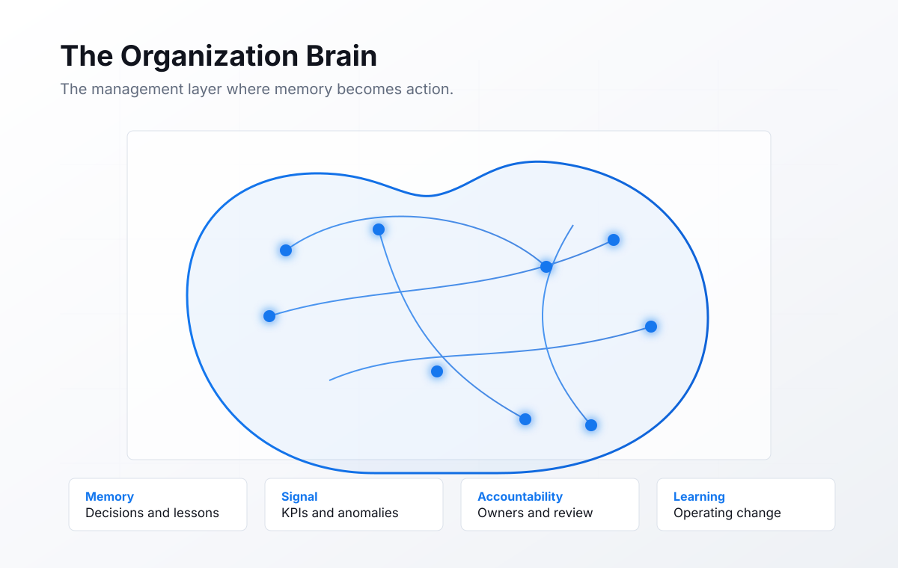
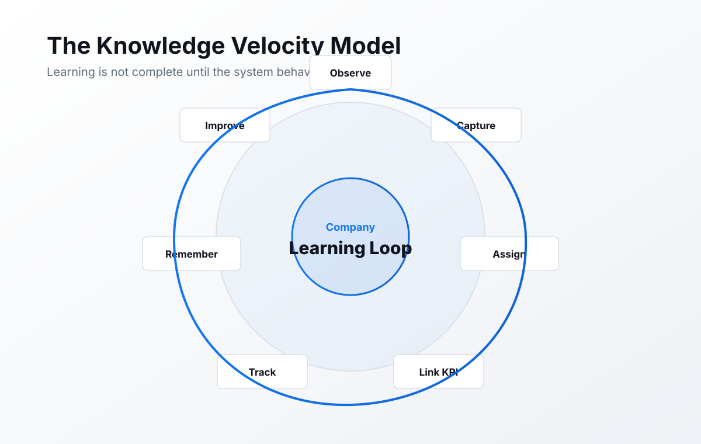

The Day the Organization Stopped Learning.
A founding chapter from The Intelligent Organization, the OTP manifesto for Organizational Intelligence Management.

Imagine every employee remembers everything they have ever learned.
Now imagine the company remembers none of it.
The gap
People remember. Companies forget.
Modern companies are full of intelligent people. They hire carefully. They train leaders. They buy software. They run meetings. They document processes. They review performance.
Then much of that intelligence disappears.
It leaves when a person leaves. It fades after a meeting. It hides in a deck. It dies in a thread.
The company does not lose because it lacks intelligence. It loses because intelligence never becomes organizational.
Institutional amnesia
Documentation is not the same thing as memory.

A company can have thousands of documents and still forget what matters.
The documentation problem
Most documentation is a photograph of the organization.
Documentation captures what someone thought was worth recording at a moment in time. That is useful. It is also incomplete.
It rarely captures judgment. It rarely captures the tradeoff. It rarely captures what almost went wrong. It rarely captures the private context that made the decision make sense.
The company needs a nervous system.
The hidden cost
The forgetting tax compounds quietly.
The best people become translators. Leaders become memory. Managers become routers.
The software gap
Software organized almost everything except intelligence.
OTP organizes organizational intelligence.
The missing layer
The Organizational Intelligence Layer connects work, memory, and accountability.

Why AI changes the possibility
A chatbot answers questions. An Organizational Partner improves the organization.
AI can now watch patterns, remember decisions, compare performance, prepare meetings, track commitments, and notice drift.
But raw AI is not enough. The value is not that an agent can generate words. The value is that an agent can be accountable for a role.
The workforce frame
If AI does work, it needs management.
The future belongs to companies that manage digital labor with seriousness.
The first Organizational Partner
Meet Ollie.
Ollie is the first Organizational Partner. Organic on one side. Digital on the other.
The character carries the whole promise: human warmth and organizational intelligence in one accountable partner.
Original framework
The Company Learning Loop

- Observe the work.
- Capture the decision.
- Assign ownership.
- Link to a metric.
- Track the result.
- Remember the lesson.
- Improve the system.
Executive insight
The highest-value question is no longer, "What can AI do?"
The better question is, "What should the organization never forget again?"
That question moves leadership from tool adoption to institutional design. It moves AI from experimentation to accountability.
Closing
The next great company will not simply use AI.
It will not ask every leader to carry the company in their head.
It will not confuse storing information with learning.
It will hold humans and agents to the same standard.
It will become an Intelligent Organization.